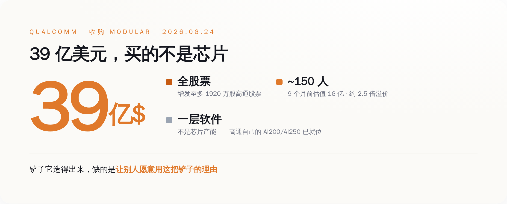
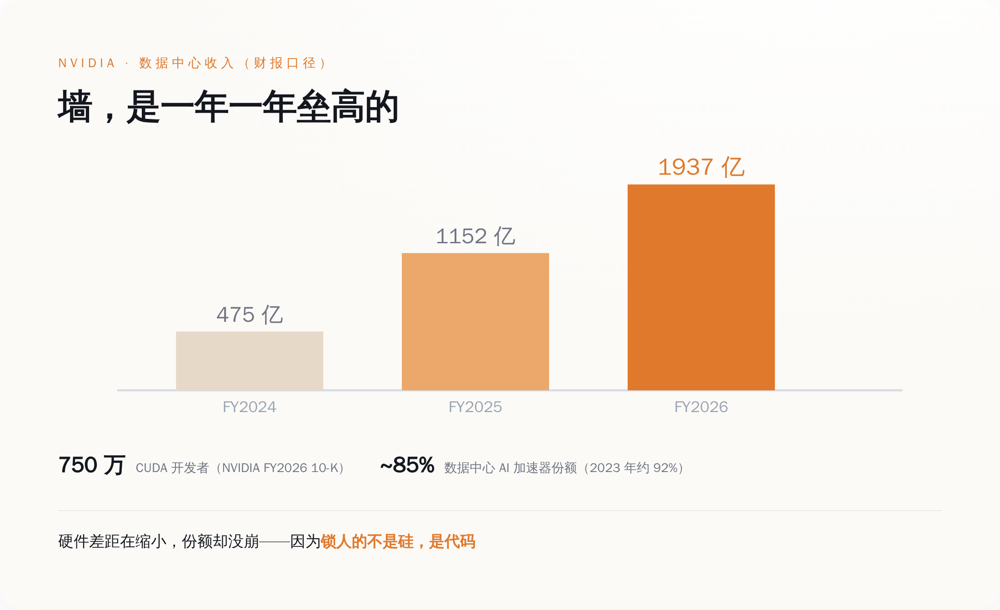
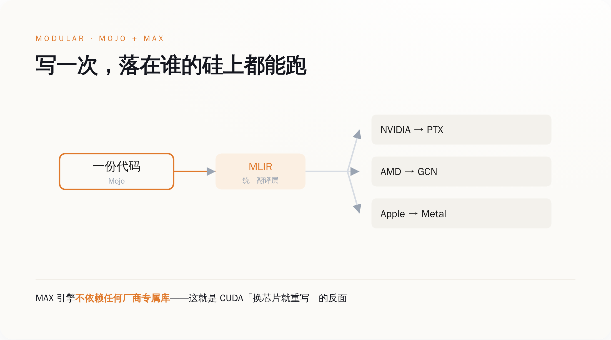
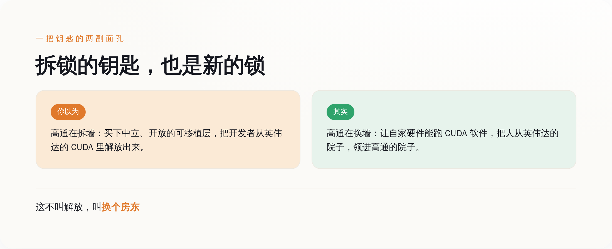

一、高通买的不是芯片，是"翻译"
先把交易本身说清楚，不然容易被当成标题党。
6 月 21 日双方签了最终协议，6 月 24 日高通在投资者日上正式官宣。全股票，约 39 亿美元，最多增发 1920 万股，预计 2026 下半年完成交割，还要过反垄断。Modular 那 150 来号人，整建制并进高通的工程团队。
高通 CEO Cristiano Amon 在当天的官方稿里是这么说的：
"我们正在定义高通的下一个篇章……并进化成一家平台公司。"
注意"平台公司"这四个字。一家做了四十年芯片和专利授权的公司，突然说自己要做平台。平台是软件的词，不是硬件的词。
为什么？因为硬件这块，高通其实不缺了。
去年 10 月，高通已经发布了数据中心推理芯片 AI200（2026 年上市）和 AI250（2027 年）。今年 6 月的投资者日上，它又甩出一整套叫 Dragonfly 的数据中心路线图：自研 CPU、推理加速卡、网络、定制硅，连内存都自己搞了个"高带宽计算"。Meta 已经签了多代 CPU 大单。高通还放话，2029 财年数据中心要做到 150 亿美元收入，非手机业务要做到 400 亿。
铲子，它造得出来。
缺的是什么？是让别人愿意用这把铲子的理由。
而这个理由，从来不在硅里。

二、英伟达真正的护城河，是"重写代价"
要看懂高通在买什么，得先看懂英伟达到底靠什么赚钱。
大多数人以为，英伟达赢在芯片快。这话只对了一半。
英伟达的数据中心业务，按它向 SEC 报的财报：2024 财年 475 亿美元，2025 财年 1152 亿，2026 财年 1937 亿，三年涨了四倍多，占了整个公司九成的收入。
但真正撑住这个数字的，不是 GPU 跑得多快。是一个 2006 年就推出的软件平台，叫 CUDA。
按英伟达 2026 财年的 10-K（这是要对 SEC 宣誓担责的法律文件），全球有超过 750 万开发者在用 CUDA。一年前的 10-K 还是 590 万。这些人写的每一行 AI 代码，几乎都默认跑在英伟达的硅上。
这才是墙。
你想换一块更便宜的芯片？可以。但你的代码得重写。CUDA 这套东西——cuDNN、TensorRT、那些攒了快二十年的算子库——换到别家芯片上，没有自动翻译。AMD 的 ROCm 至今没有 TensorRT 的等价物；最新的 FlashAttention 3 只在英伟达 H100 上跑；连官方的转换工具 hipify，都明说转不了内联 PTX 汇编。
所以你会看到一个反常识的现象：英伟达在数据中心 AI 加速器的份额，从 2023 年的约 92% 掉到了 2026 年的 80%-85%。硬件上的差距，AMD 们确实在追。
可份额没崩。
因为锁人的不是硅，是代码。竞争对手的芯片就算免费送，迁移要重写的工程量，也比省下的钱贵。
英伟达卖的是芯片，护住它的，是 750 万人懒得重写的代码。
三、那把梯子叫 Modular；造梯子的人，造了 25 年"翻译"
现在回头看高通买的东西，就清楚了。
Modular 这家公司，2022 年成立，两个创始人。一个叫 Tim Davis，谷歌出来的，搞过 TensorFlow Lite。另一个，叫 Chris Lattner。
这个名字，写代码的人应该都认识。
他在伊利诺伊读书时的硕士论文，就是 LLVM——今天几乎所有编译器的底座。后来去苹果，造了 Clang，又偷偷搞了四年，整出了 Swift 语言。中间去特斯拉做了半年 Autopilot 主管，嫌不合适走了。再去谷歌，主导了 MLIR——专门用来把 AI 模型编译到各种乱七八糟硬件上的中间层。然后去 RISC-V 芯片公司 SiFive 当工程总裁。2022 年出来，创立了 Modular。
你把这条履历连起来看，会发现这个人 25 年只在干一件事：做"翻译层"。让你写的代码，不被绑死在任何一块具体的芯片上。LLVM、Clang、Swift、MLIR，每一个都是在不同层面拆"你只能用某一家"的锁。
Modular 是这件事的集大成者。它的两个产品——Mojo 语言和 MAX 推理引擎——卖点就一句话：write once, run anywhere。一份代码，CPU、英伟达 GPU、AMD GPU、苹果芯片、各种 NPU，都能跑，不用为每块芯片重写。
技术上怎么做到的？Mojo 建在 MLIR 上，同一份代码经过编译，能分别吐出英伟达要的 PTX、AMD 要的 GCN 指令、苹果要的 Metal。MAX 引擎按官方文档的说法，"不依赖任何厂商专属的硬件库"。
翻译成人话：它就是专门来拆"重写代价"这堵墙的。Lattner 自己在收购公告里说：
"Modular 创立的信念，就是 AI 需要一个更开放、更高效的软件底座，能横跨各种硬件和部署环境。"
英伟达最怕的，就是这种东西。

四、解放者被买走的那一刻
到这里，故事本该是个爽文：屠龙少年造了把梯子，要带大家翻过英伟达那堵墙。
但你仔细想想就会发现哪里不对。
一个标榜"开放""中立""让 AI 计算民主化"的可移植层，最大的价值，恰恰在于它不属于任何一家硬件公司。它得对所有芯片一视同仁，开发者才信它，才敢把代码托付给它。
现在，它被一家卖芯片的公司买走了。
高通收购它，图的是什么？高通自己说得很直白：这笔交易能让它"在自己的硬件上，跑那些基于 CUDA 写的软件"。
听懂了吗？高通要的不是拆掉世界上所有的墙。它要的是：把英伟达那堵墙拆了，然后在自己的院子里，垒一堵新的。
把开发者从英伟达的锁里放出来，转头领进高通的门。这不叫解放，这叫换个房东。
这就是整件事最半佛的地方——
能拆掉一堵墙的钥匙，本身就是最好的另一堵墙。谁拿到这把能让你"逃离英伟达"的钥匙，谁就握住了你下一程的去向。可移植性这东西，最值钱的时候，是它还没被任何一家硬件公司装进口袋的时候。一旦装进去了，它就从"梯子"变成了"绳子"。

五、"花大钱买逃生工具"，高通演过一次了
如果你觉得上面是诛心之论，那我们看高通自己的前科。
"花一大笔钱，买一个能让自己逃离别人的锁的东西"——这个剧本，高通 2021 年完整演过一遍。
那年，它花 14 亿美元买了家叫 Nuvia 的 CPU 公司。目的很纯粹：用 Nuvia 的自研架构，绕开向 Arm 交的授权费——CEO 自己在法庭上算过，一年能省下高达 14 亿。
听起来跟今天买 Modular 一模一样：买个东西，逃离一个卡着你脖子的供应商。
结果呢？
Arm 一纸诉状告了高通三年，理由是 Nuvia 的授权不能随收购自动转移。高通最后在 2024 年底打赢了官司，2025 年 10 月拿到终审，Arm 还在上诉。打赢了，但这三年的法律风险，悬在高通整个芯片业务头上。
更刺的还在后面。2026 年 4 月——也就是两个月前——当年 Nuvia 的核心创始团队，从高通集体出走，拿了红杉的钱，又开了家新公司叫 Nuvacore。
高通花 14 亿买回来的那批人，把技术做进产品之后，转身走了。
这就是"买逃生工具"这种生意最大的两个雷：
第一，人是会走的。你买的是 150 个工程师和一套理念，不是一座厂房。Lattner 这种人，过去二十年换了五家公司，最长的一站也就十一年。
第二，社区是用脚投票的。Modular 的全部价值建立在"中立"上。它越是被一家硬件公司攥在手里，那些指望它逃离锁定的开发者，就越要重新掂量：我费劲从英伟达的院子搬出来，是为了住进高通的院子吗？
顺便说一句，高通更大的那笔收购——2018 年想花 440 亿买 NXP——最后黄在中国监管手里，赔了 20 亿美元分手费。
买东西它很会买。买完能不能拿住，是另一回事。
六、下次再有人跟你吹"性价比吊打英伟达"
说回我们普通人能用上的东西。
这事最大的启发，不是高通能不能赢，而是它教你怎么看一块芯片、一个云、一个 AI 供应商到底有没有护城河。
以后再有人跟你吹某款芯片"TOPS 吊打英伟达""性价比碾压英伟达"，你先别急着信。问一句就够了：
换到你这块芯片，我的代码要重写多少行？如果答案是"几乎不用改"，那它可能真有戏。如果答案是"重写、重测、重新调三个月"，那它再快再便宜，也翻不过那堵墙。
因为锁住 AI 的，从来不是最慢的硬件，是最贵的重写。
高通看懂了这一点，所以它没去硬刚芯片，而是花 39 亿买了把梯子。这一步，比绝大多数"我要做中国的英伟达""我要做英伟达平替"的公司，都清醒得多。
但梯子这东西有个悖论：它搭稳的那一天，就是它变成新墙的那一天。
这笔交易最终是好是坏，就看一件事——Modular 落到高通手里之后，那把梯子还开不开源、还中不中立。如果它继续对所有芯片一视同仁，那是开发者的胜利；如果它慢慢变成只为高通的硅服务的私产，那不过是把英伟达的墙，换了块砖。
可移植性最值钱的时候，是它还不属于任何一家硬件公司的时候。而它现在，属于高通了。